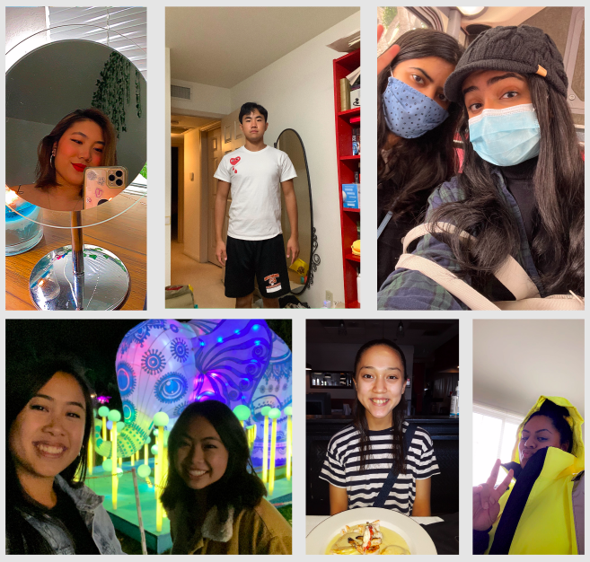

Our Community & Reflection
Over the course of this project, I was able to reach out to several of my peers, fellow college students, and their families. We were able to use the site I created with the various resources compiled to particpate in these beneficial movement exercises. I conducted post-participation verbal interviews with the participants and many of them had not known what a Brain Dance was and were pleasantly surprised by how helpful it was. Many of them said they would be incorporating the Brain Dance and Free Dance into their regular lives after this. Below are some photos shared by a few of the participants from my community project!
